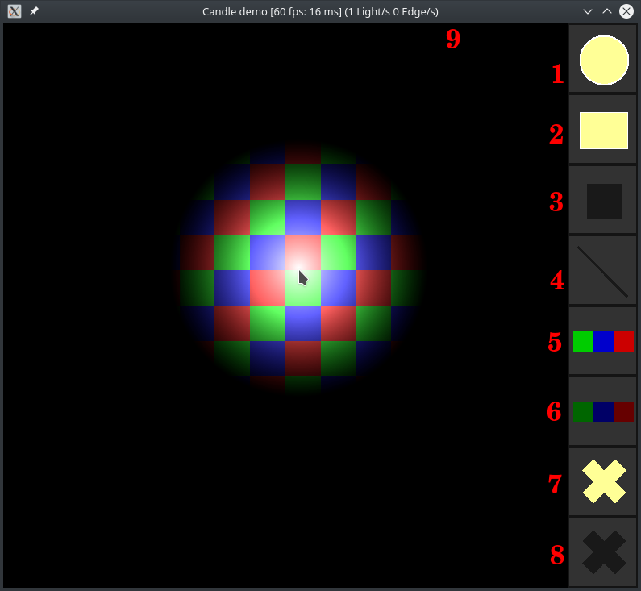

The Candle source code comes with a demo program that you can build along with the library. It is also the one used to illlustrate almost everything in the official documentation.
It consists of a canvas with a background of colored tiles and eight buttons on the side, to access the brushes and make some common manipulations easier. However, there is much more to it than what is available through the minimalistic GUI. Also, in the window title, the framerate both in fps and ms and two counters for the number of lights and edges in the scene are displayed.

Demo program map
Controls
- Set brush
- [R] Set the brush as a radial light. (1)
- [D] Set the brush as a directed light. (2)
- [B] Set the brush as a block or square of fixed edges. (3)
- [L] Set the brush to draw free edges. (4)
- [Right click] Unset brush.
- Customize brush - Radial light / Directed light
- [Mouse wheel] Modify range.
- [Alt + Mouse wheel] Modify rotation.
- [Shift + Mouse wheel] Modify beam angle/ beam width.
- [X] Decrease the intensity of the light.
- [S] Increase the intensity of the light.
- [C] Alternate color between magenta, cyan and yellow.
- [G] Disable drawing lights. Use in fog mode (see below).
- [F] Toggle the fade flag.
- Customize brush - Block
- [Mouse wheel] Modify block size
- Customize brush - All
- [Ctrl] Hold to fix the position of the brush to discrete values.
- Modify fog/ambience light
- [M] Alternate between fog mode with black color and ambient light with yellow color.
- [T] In fog mode, disable clearing the lighting area to get a fog of war effect.
- [Z] Decrease the opacity of the fog/ambience light . (5)
- [A] Increase the opacity of the fog/ambience light. (6)
- Use a texture. Before you launch the program, put a PNG image in the working directory called
texture.png, and it will use it as the LightingArea texture.
- Clear the scene
- [Shift + Space] Remove all lights from the scene. (7)
- [Alt + Space] Remove all edges from the scene. (8)
- [Space] Remove all elements from the scene.
- Window
- [Q] or [Esc] Quit the demo.
- [P] Capture an image of the canvas and save it in the working directory.